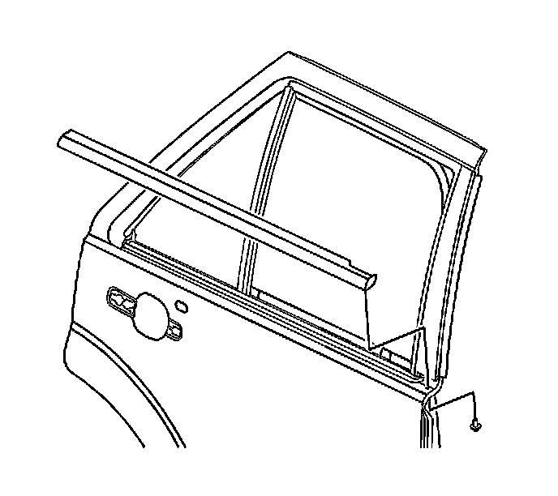

Rear Door Window Belt Outer Sealing Strip Replacement
Rear Door Window Belt Outer Sealing Strip Replacement
Removal Procedure
1. Lower the window to the full down position.

Important: Do not distort the sealing strip.
2. Remove the rear door outer belt sealing strip from the rear door pinch-weld flange by gently pulling up.
Installation Procedure
1. Install the rear door outer belt sealing strip to the rear door pinch-weld flange .
1. Align the sealing strip clips to the slots in the pinch-weld flange of the door.
2. Push the sealing strip downward to fully seat and secure the strip to the door.
2. Raise the rear door window.